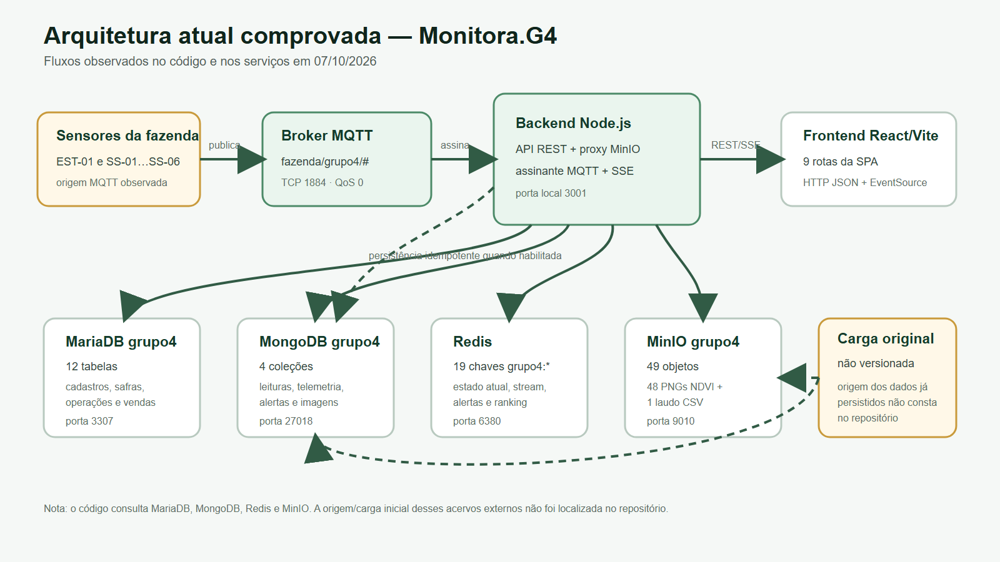
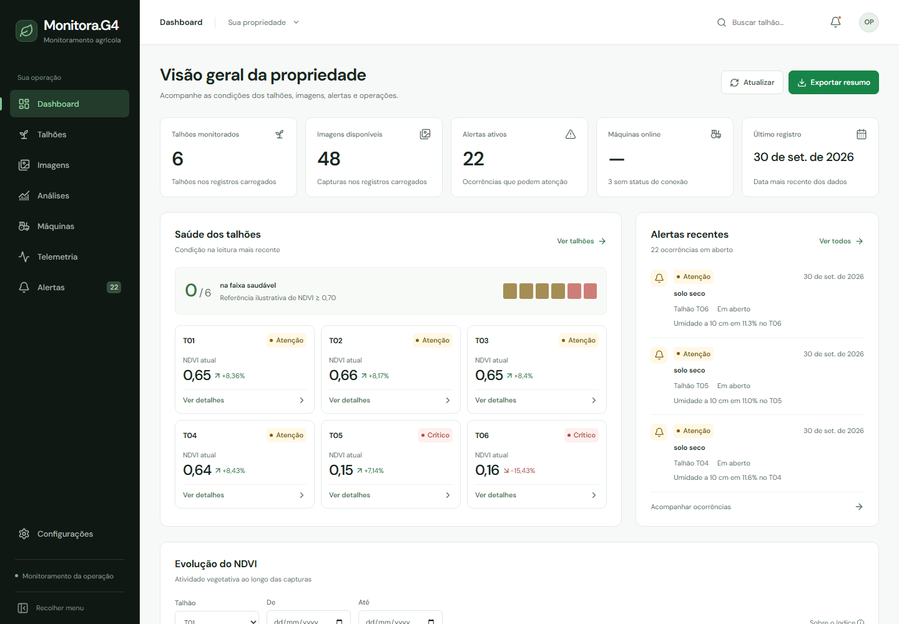
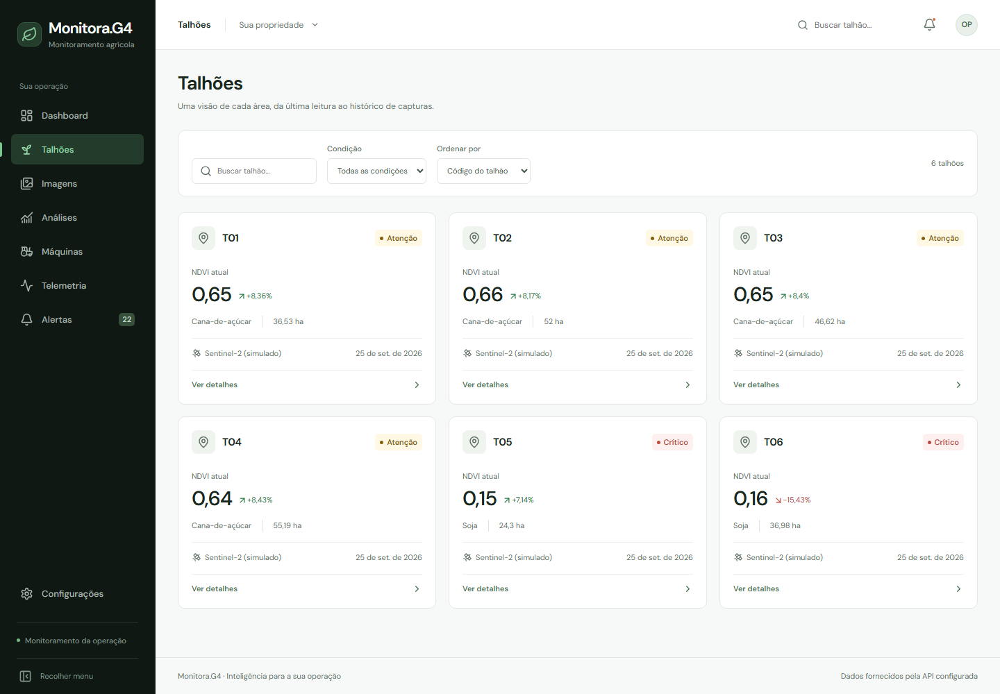
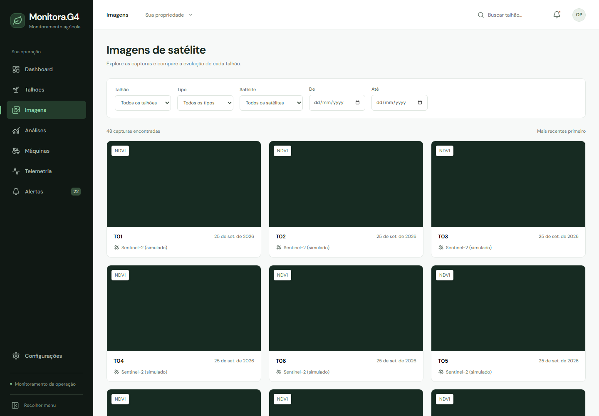
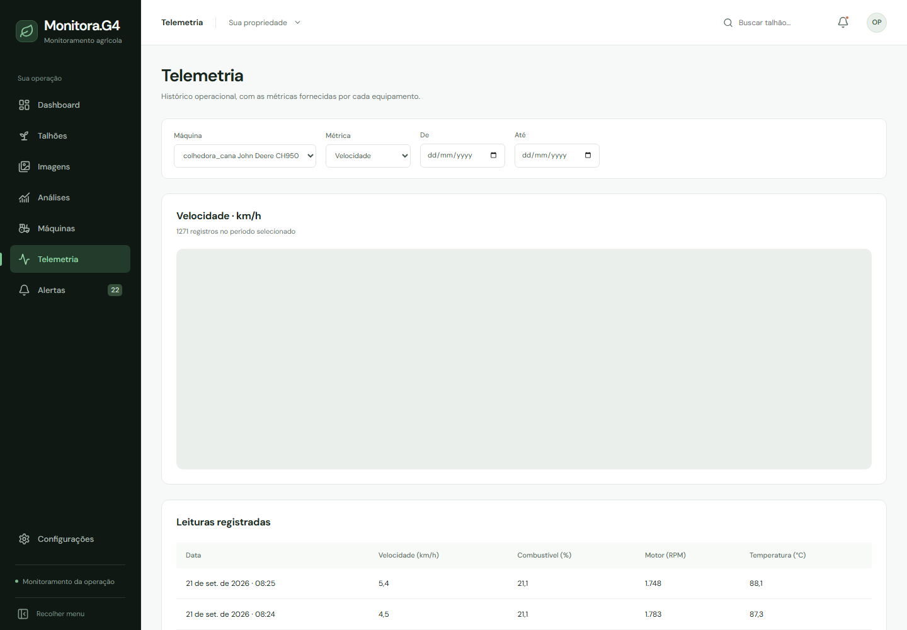
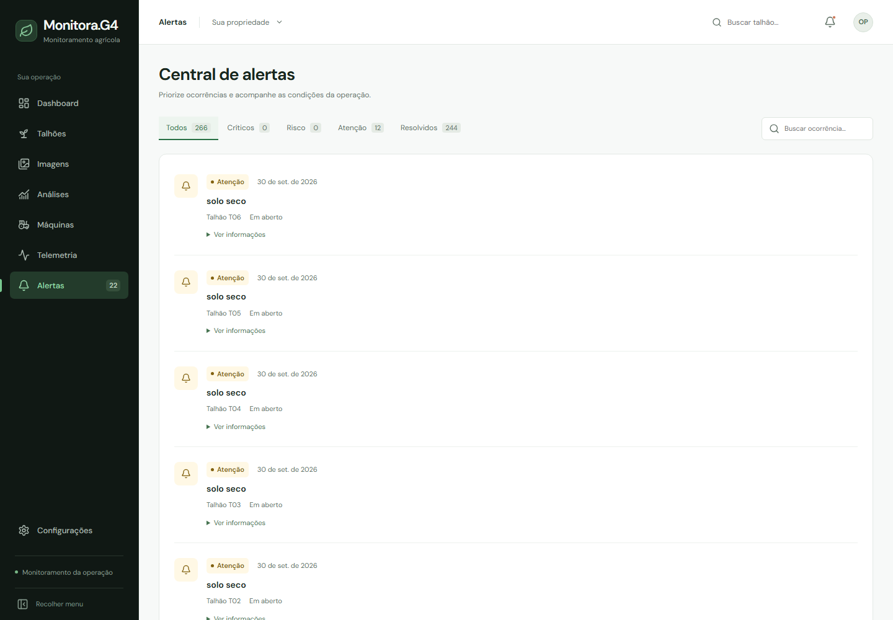
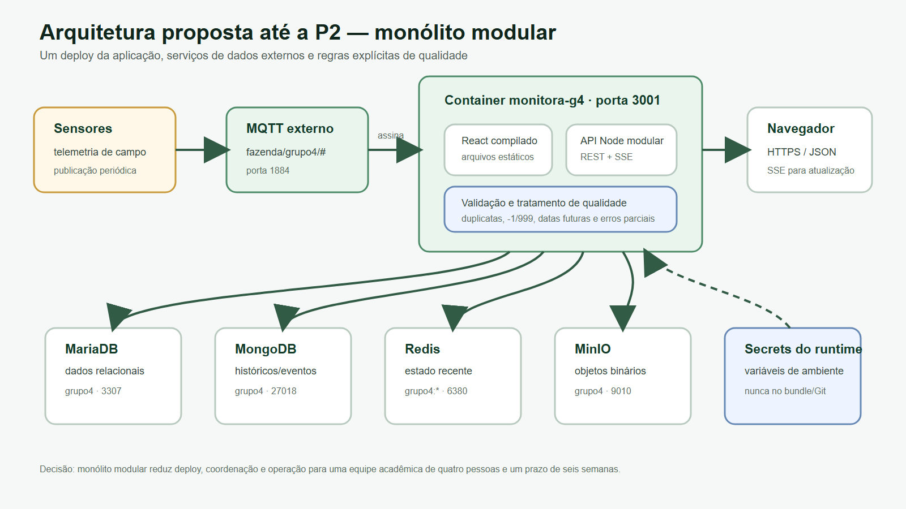

| Nº | Integrante | RA |
|---|---|---|
| 1 | CARLOS ROBERTO VIEL FILHO | 2591262422008 |
| 2 | GABRIEL RIBAS FERREIRA DE ALMEIDA | 2591262422003 |
| 3 | OLDINEY NATANAEL GALVÃO | 2591262422021 |
| 4 | MATHEUS MÁXIMO DANELUTI PAIVA | 2591262422022 |
1. Grupo e fazenda
2. Estudo dos dados
2.1 Consulta 1 — Composição da fazenda
2.2 Consulta 2 — Evolução do NDVI
2.3 Consulta 3 — Alertas de solo seco
2.4 Consulta 4 — Perfil das máquinas
2.5 Consulta 5 — Umidade atual
3. Qualidade dos dados
4. Arquitetura atual
5. Escopo do sistema web
5.1 Problema e usuários
5.2 Requisitos
5.3 Telas
5.4 De onde vem cada informação
6. Arquitetura proposta e plano
6.1 Arquitetura proposta
6.2 Cronograma até a P2
6.3 Divisão de tarefas
Declaração
| Grupo | Grupo 4 |
|---|---|
| Fazenda | Fazenda São João — Quintana/SP — 296,91 ha |
| Culturas | Cana-de-açúcar (T01–T04) e soja (T05–T06) |
| Repositório GitHub | https://github.com/carlosvielf/Grupo4PI_ArqCloud.git |
| Portas configuradas | API 3001; MariaDB 3307; MongoDB 27018; Redis 6380; MQTT TCP 1884; MQTT WebSocket 9012; MinIO 9010; Vite local 5173/5175 |
Os nomes da fazenda, município, área e culturas vieram da Consulta 1 no MariaDB e foram confrontados com o hash grupo4:fazenda e os hashes de talhões do Redis. A relação de integrantes e RAs foi informada diretamente pelo grupo para esta versão final.
| Serviço | O que guarda | Quantidade | Período | Consulta usada |
|---|---|---|---|---|
| MariaDB | fazenda, talhões, culturas, pessoas, máquinas, safras, operações, estoque, clientes e vendas | 12 tabelas; 559 linhas | 15/03/2021–18/01/2027; registros futuros tratados como planejamento/qualidade | information_schema + SELECT COUNT(*), MIN(), MAX() |
| MongoDB | leituras de sensores, telemetria, alertas e catálogo NDVI | 4 coleções; 87.174 documentos | 01/06/2026–07/10/2026 | countDocuments e aggregations por coleção |
| Redis | estado atual, talhões, stream, alertas recentes, ranking e contadores | 19 chaves grupo4:* (76 no banco compartilhado) | estado observado em 07/10; chaves sem histórico próprio | SCAN MATCH grupo4:*, TYPE, TTL |
| MQTT | status e mensagens de sete sensores | 9 mensagens em 75,023 s; 8 tópicos únicos | janela passiva de 07/10/2026; ciclos ≈60 s | SUBSCRIBE fazenda/grupo4/#, QoS 0 |
| MinIO | 48 PNGs NDVI e um laudo CSV | 49 objetos; 3.299.616 bytes | imagens 05/06–25/09/2026; laudo 2026 | bucketExists + listObjectsV2 |
Contagens congeladas em 08/10/2026 00:27:23 UTC. A coleção leituras é alimentada por fluxo e pode crescer.
Pergunta. Quais talhões, áreas e culturas compõem a Fazenda São João?
SELECT f.nome, f.municipio, f.uf, f.area_total_ha,
t.codigo AS talhao, t.area_ha, c.nome AS cultura
FROM fazenda f JOIN talhao t ON t.fazenda_id=f.id
LEFT JOIN cultura c ON c.id=t.cultura_atual_id ORDER BY t.codigo;
| Talhão | Área (ha) | Cultura |
|---|---|---|
| T01 | 36,53 | Cana-de-açúcar |
| T02 | 52,00 | Cana-de-açúcar |
| T03 | 46,62 | Cana-de-açúcar |
| T04 | 55,19 | Cana-de-açúcar |
| T05 | 24,30 | Soja |
| T06 | 36,98 | Soja |
Resultado e interpretação. Há seis talhões e 251,62 ha produtivos cadastrados. A fazenda tem 296,91 ha; 45,29 ha não estão associados a esses talhões e podem representar reserva, vias ou outra área não cadastrada. Sem evidência adicional, a diferença não foi rotulada como erro.
Pergunta. Qual a diferença entre a primeira e a última leitura NDVI de cada talhão?
db.imagens.aggregate([
{$match:{ndvi_medio:{$type:"number"},data:{$type:"date"}}},
{$sort:{talhao:1,data:1}},
{$group:{_id:"$talhao",leituras:{$sum:1},
primeiro_ndvi:{$first:"$ndvi_medio"},ultimo_ndvi:{$last:"$ndvi_medio"},
media_ndvi:{$avg:"$ndvi_medio"}}}
])
| Talhão | Leituras | Primeiro | Último | Variação |
|---|---|---|---|---|
| T01 | 8 | 0,298 | 0,648 | +0,350 |
| T02 | 8 | 0,312 | 0,662 | +0,350 |
| T03 | 8 | 0,295 | 0,645 | +0,350 |
| T04 | 8 | 0,237 | 0,643 | +0,406 |
| T05 | 8 | 0,490 | 0,150 | −0,340 |
| T06 | 8 | 0,446 | 0,159 | −0,287 |
Resultado e interpretação. T01–T04 melhoraram, enquanto T05 e T06 encerraram o período com forte queda e os menores índices. Eles devem ser destacados para inspeção, sem transformar NDVI isolado em diagnóstico agronômico.
Pergunta. Quantas ocorrências de solo seco há por talhão e quantas estão resolvidas?
db.alertas.aggregate([
{$match:{tipo:"solo_seco"}},
{$group:{_id:"$talhao",ocorrencias:{$sum:1},
resolvidas:{$sum:{$cond:["$resolvido",1,0]}},
primeira:{$min:"$ts"},ultima:{$max:"$ts"}}},
{$sort:{ocorrencias:-1,_id:1}}
])
| Talhão | Ocorrências | Resolvidas |
|---|---|---|
| T01 | 47 | 47 |
| T02 | 47 | 47 |
| T04 | 45 | 45 |
| T03 | 35 | 35 |
| T05 | 33 | 33 |
| T06 | 33 | 33 |
Resultado e interpretação. As 240 ocorrências históricas estavam resolvidas. T01 e T02 concentram 39,2% dos alertas, informação útil para priorizar análise de recorrência e manejo.
Pergunta. Quais máquinas possuem telemetria e quais foram suas médias e extremos?
db.telemetria_maquinas.aggregate([
{$group:{_id:"$maquina",registros:{$sum:1},inicio:{$min:"$ts"},fim:{$max:"$ts"},
velocidade_media_kmh:{$avg:"$velocidade_kmh"},
combustivel_medio_pct:{$avg:"$combustivel_pct"},
temperatura_maxima_c:{$max:"$temp_motor_c"}}},
{$sort:{registros:-1,_id:1}}
])
| Máquina | Registros | Velocidade média | Combustível médio | Máx. motor |
|---|---|---|---|---|
| M05 | 3.685 | 5,00 km/h | 56,46% | 97,3 °C |
| M03 | 1.573 | 15,98 km/h | 81,09% | 95,9 °C |
| M01 | 524 | 6,99 km/h | 85,92% | 95,9 °C |
Resultado e interpretação. Só três das seis máquinas cadastradas têm telemetria. M05 domina o volume e atingiu a maior temperatura; o dashboard deve separar ausência de telemetria de “máquina offline”.
Pergunta. Quais valores mais recentes de umidade a 10 e 30 cm existem para cada sonda?
SCAN MATCH grupo4:sensor:SS-* COUNT 100 HGETALL <cada chave encontrada>
| Sonda | Umidade 10 cm | Umidade 30 cm |
|---|---|---|
| SS-01 | 11,01% | 11,95% |
| SS-02 | 11,03% | 11,60% |
| SS-03 | 11,20% | 11,90% |
| SS-04 | 11,38% | 11,96% |
| SS-05 | 10,76% | 12,18% |
| SS-06 | 11,10% | 11,85% |
Resultado e interpretação. Na coleta, a faixa a 10 cm foi 10,76%–11,38% e a 30 cm foi 11,60%–12,18%. O Redis fornece o estado mais recente; análises históricas devem usar o MongoDB. Valores mudam em fluxo, portanto o horário precisa acompanhar a exibição.
| Problema | Como foi detectado | Registros afetados | Tratamento no sistema |
|---|---|---|---|
| Umidade a 10 cm impossível (`-1` ou `999`) | countDocuments({$or:[{"valores.umidade_10cm_pct":{$lt:0}},{...:{$gt:100}}]}) | 12: cinco `-1`, sete `999` | converter em ausência; não agregar; exibir lacuna e aviso |
| Duplicidade de sensor + timestamp | $group por sensor, ts, depois quantidade > 1 | 644 linhas em 322 pares; 322 excedentes | deduplicar na leitura e criar unicidade na ingestão futura |
| Datas posteriores à auditoria | WHERE data > CURRENT_DATE() | 20 saídas de estoque; 10 operações; 2 plantios planejados | rotular como planejado; excluir de indicadores realizados |
| Estado Redis sem expiração | TTL nas 19 chaves grupo4:* | 19 | calcular frescor pelo timestamp e adotar TTL para estado efêmero |
| Origem simulada das imagens | agrupamento de imagens.satelite | 48 de 48: `Sentinel-2 (simulado)` | manter rótulo de simulação; não declarar captura orbital real |
Testes com zero ocorrências: NDVI e nuvem fora da faixa, telemetria negativa, combustível fora de 0–100, operação com fim anterior ao início, colheita anterior ao plantio, áreas/vendas não positivas, códigos de talhão duplicados e divergências entre catálogo MongoDB e PNGs MinIO.

Os sensores publicam JSON no broker; o backend assina somente o prefixo do Grupo 4 e, com persistência habilitada, faz upsert idempotente no MongoDB. A API consulta MariaDB, MongoDB, Redis e MinIO; o navegador recebe JSON, PNG mediado e eventos SSE. A origem/carga inicial dos acervos persistidos não está no repositório e foi explicitamente indicada no diagrama.
MariaDB é adequado às relações e integridade de cadastros/transações; MongoDB acomoda séries e eventos com formatos diferentes; Redis atende estado e estruturas rápidas; MinIO guarda binários; MQTT desacopla sensores e consumidor. O backend protege as credenciais e normaliza schemas antes da UI.
Problema. Dados de campo, imagens, alertas e máquinas estão distribuídos entre cinco serviços e contêm valores inválidos, duplicatas e diferenças de atualização. Sem uma visão integrada, o responsável precisa cruzar fontes e pode interpretar estado antigo ou dado sentinela como medição válida.
Persona. Gerente de operação agrícola da Fazenda São João, com apoio de agrônomo. Hoje ele consulta cadastros, históricos e estado recente separadamente. O Monitora.G4 centraliza os dados rastreáveis, sinaliza qualidade/frescor e permite navegar do panorama ao talhão, imagem, alerta ou máquina.
Escopo até a P2. Consolidar as telas já existentes de dashboard, talhões, imagens/NDVI, alertas e telemetria; adicionar tratamento dos problemas medidos e estado atual das sondas. Custos, estoque, vendas e interpretação do laudo CSV ficam fora do MVP.
| ID | Tipo | Requisito testável |
|---|---|---|
| RF01 | funcional | Exibir os seis talhões com área, cultura, último NDVI válido e data da leitura, ocultando `-1`/`999` e duplicatas das métricas. |
| RF02 | funcional | Permitir consultar oito imagens NDVI por talhão, com metadados MongoDB e conteúdo PNG entregue pelo backend a partir do MinIO. |
| RF03 | funcional | Listar/filtrar alertas históricos e recentes e indicar status, severidade, talhão e horário. |
| RF04 | funcional | Exibir telemetria das máquinas M01, M03 e M05 por período e métrica; máquinas sem amostras devem aparecer como “sem telemetria”, não “offline”. |
| RF05 | funcional | Mostrar estado e frescor das seis sondas Redis/MQTT, marcando leitura desatualizada conforme timestamp. |
| RNF01 | não funcional | Manter senhas e tokens apenas em variáveis do backend; nenhum segredo pode aparecer em `VITE_*`, bundle, Git, logs ou respostas. |
| RNF02 | não funcional | Responder cada endpoint em até 15 s ou apresentar erro parcial sem fallback para mock; validar por teste integrado. |
| RNF03 | não funcional | Atender WCAG 2.1 AA nas cinco telas principais e manter layout sem rolagem horizontal em 390–1440 px. |





| Tela | Informação exibida | Serviço de origem | Coleção / tabela / chave / tópico |
|---|---|---|---|
| Dashboard/Talhões | código, área e cultura | MariaDB | talhao JOIN cultura |
| Dashboard/Talhões | último NDVI e evolução | MongoDB | imagens.talhao/data/ndvi_medio |
| Dashboard/Alertas | histórico de ocorrências | MongoDB | alertas |
| Dashboard/Alertas | alertas recentes | Redis | grupo4:alertas:recentes |
| Imagens | catálogo, data, tipo e satélite | MongoDB | imagens |
| Imagens | conteúdo PNG | MinIO | bucket grupo4; imagens.objeto |
| Máquinas/Telemetria | nome/tipo e métricas | MariaDB + MongoDB | maquina + telemetria_maquinas |
| Dashboard/Talhão (P2) | umidade e frescor atual | Redis + MQTT | grupo4:sensor:SS-*; fazenda/grupo4/sensores/* |

Decisão: monólito modular. Um único container Node servirá o frontend compilado, a API e o consumidor MQTT na porta 3001. A equipe acadêmica prevista pela atividade é pequena e o prazo é de seis semanas; microsserviços adicionariam deploy, rede, observabilidade e coordenação sem uma necessidade de escala comprovada. Módulos internos mantêm separação por serviço sem multiplicar processos.
MariaDB 3307, MongoDB 27018, Redis 6380, MQTT 1884/9012 e MinIO 9010 permanecem serviços externos do Grupo 4. Credenciais entram por variáveis protegidas no runtime; apenas configurações públicas podem usar `VITE_*`. O consumidor assina `fazenda/grupo4/#`, valida o payload, faz upsert idempotente e sinaliza atualizações por SSE. A camada de qualidade descarta sentinelas e duplicatas das métricas, distingue planejamento de realizado e avalia o frescor do Redis.
| Semana | Entrega do grupo |
|---|---|
| 08/10–14/10 | Fechar P1; priorizar backlog; criar testes para 12 sentinelas, 322 duplicatas, datas futuras e frescor Redis. |
| 15/10–21/10 | Implementar normalização/deduplicação na API; distinguir planejado/realizado; criar Dockerfile do monólito e política de secrets. |
| 22/10–28/10 | Integrar estado Redis/MQTT das seis sondas ao dashboard/detalhe; exibir timestamp e estado desatualizado; testes de contrato. |
| 29/10–04/11 | Revisar alertas, telemetria e paginação/limites; tolerância a falha parcial; validar imagem privada e ausência de exposição de segredos. |
| 05/11–11/11 | Deploy de homologação; E2E real, acessibilidade, responsividade e desempenho; validação com a persona e correções. |
| 12/11–17/11 | Correções finais, sistema no ar, relatório atualizado, vídeo, ensaio e entrega P2. |
| Integrante | Responsabilidades nesta P1 e no projeto |
|---|---|
| CARLOS ROBERTO VIEL FILHO | Frontend e experiência: integrar o estado das sondas ao dashboard/detalhe, revisar alertas e telemetria, garantir responsividade e acessibilidade e apoiar as correções finais. |
| GABRIEL RIBAS FERREIRA DE ALMEIDA | Backend e dados: implementar normalização/deduplicação, separar planejado de realizado, consolidar API e fluxo MQTT/Redis e manter os testes de integração dos serviços. |
| OLDINEY NATANAEL GALVÃO | Infraestrutura e segurança: criar o container do monólito, configurar variáveis/secrets, preparar homologação e sistema no ar, acompanhar disponibilidade e falhas parciais. |
| MATHEUS MÁXIMO DANELUTI PAIVA | Qualidade e entrega: executar testes de contrato, E2E, acessibilidade e desempenho; organizar evidências; revisar relatório; produzir o vídeo e coordenar a entrega P2. |
Declaramos que este documento foi elaborado pelos integrantes listados na capa, que as consultas e resultados apresentados foram executados sobre os dados do nosso grupo, e que a contribuição de cada integrante está descrita na seção 6.3.